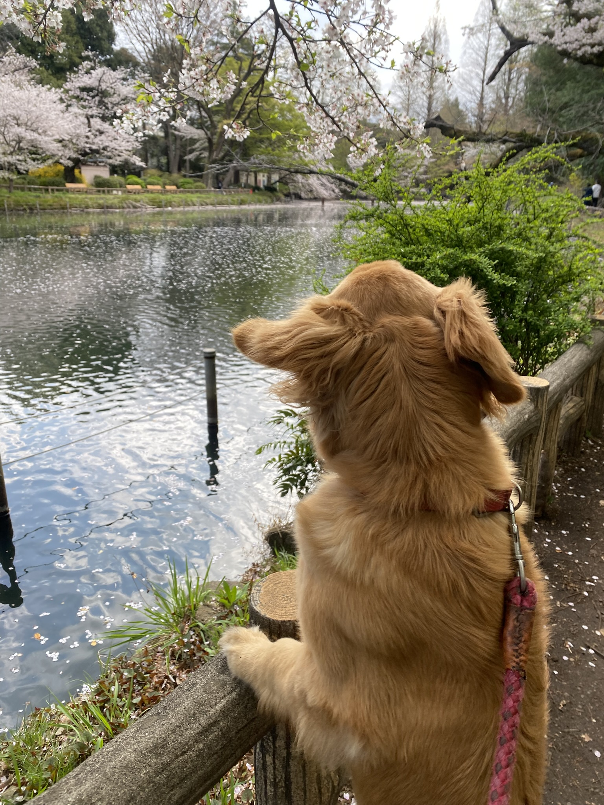
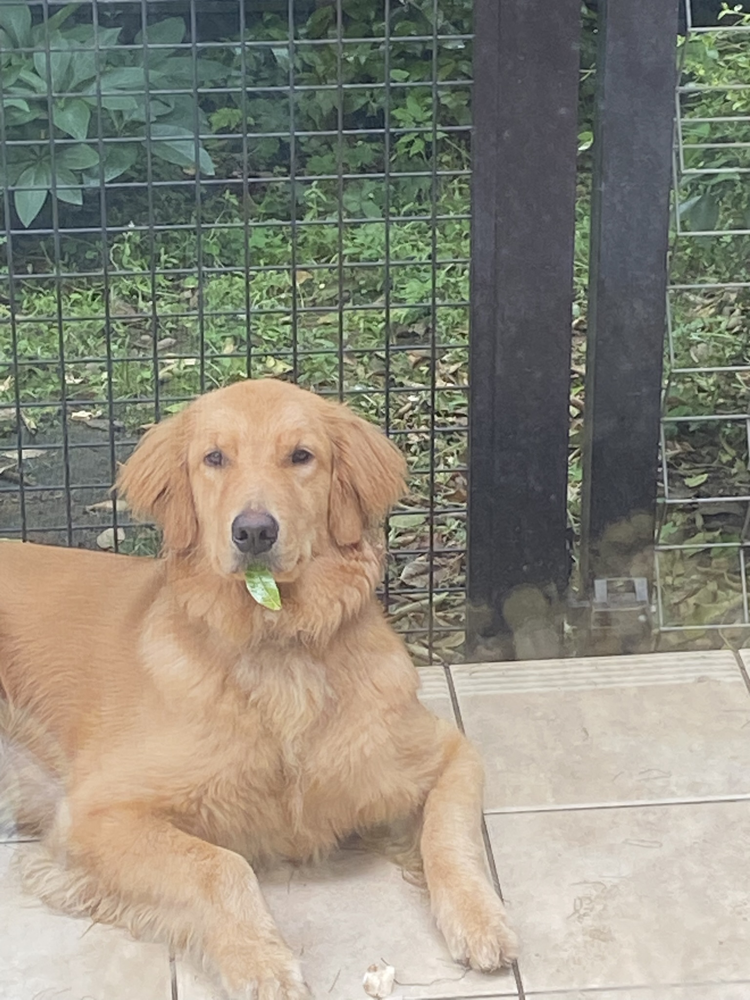
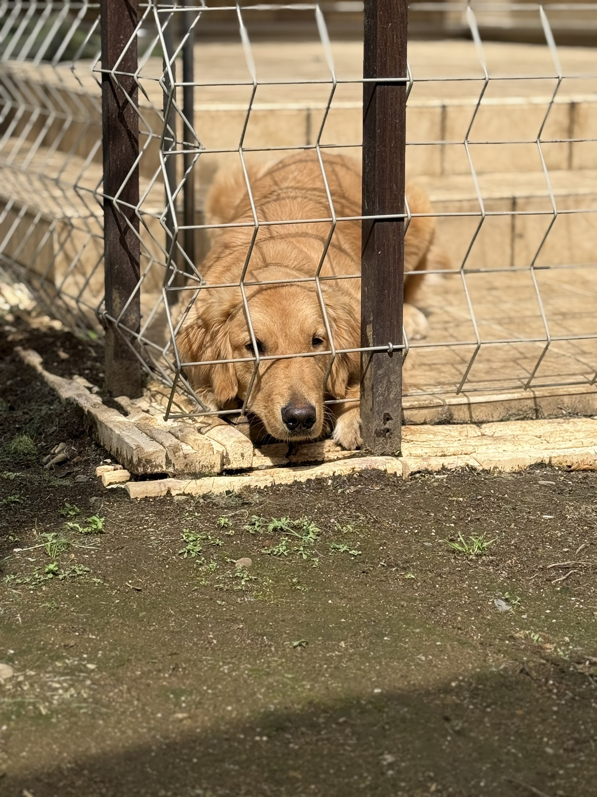

ゴールデンレトリバーとは、原産国がイギリスの大型犬です。
基本的に優しく、頼れるパートナーで、利口で友好的な性格です。
ゴールデンレトリバーの「レトリバー」は英語のretrieve(取ってくる)に由来し、この名前からもわかる通り、
鳥猟犬として古くから親しまれてきました。
以下の写真は本ウェブサイト作者が飼育しているゴールデンレトリバー、名前は「ふく」です。1歳の女の子になります。
血統書付きのゴールデンレトリバーであるにも関わらず、非常に人見知りが激しく、不審者や動物を見かけると吠え散らかします。
本来、ゴールデンレトリバーはその友好的すぎる性格故に番犬に向かないのですが、ふくは生まれてくる犬種を間違えてしまったようです。
また、ふくは相手が自分よりも憶病であることを理解すると、ぐいぐいコミュニケーションをとりに行きます。生粋のイキリ陰キャのようです。
ゴールデンレトリバーとは
- 
- 
- 